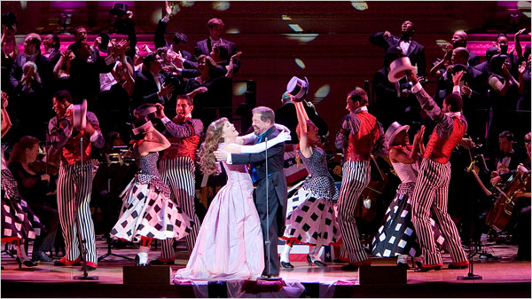
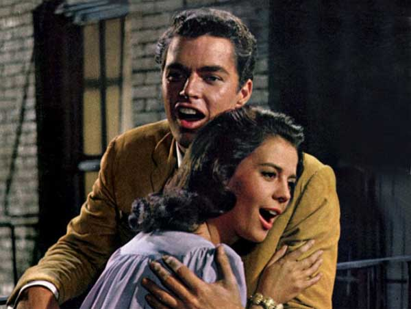

-
Show Queen: The Musical Sublimation of Gay Romance
by Sam Biederman May 14, 2010
For a certain subset of New York homosexuals, the Greenwich Village piano bar Marie’s Crisis is a crucial hub, a cornerstone of what it means to be gay in Manhattan. The place is packed seven days a week with men young and old, belting out Broadway classics alongside a piano.
I have visited Marie’s Crisis only once, when I was dragged there on a date that was beginning to flag. Although I had heard of the place, it had never actually occurred to me to go there. Hanging out with a bunch of old show queens was not my idea of a good time. I wasn’t big on labels, I told myself, but hanging around singing show tunes was not how my kind of queer spent a Saturday night.
I learned after half a beer that what separates me from the sort of guy who sings showtunes in bars is, well, half a beer. Although I fall safely in the “New Gay” camp as defined by Doree Shafirir, I sang Rogers and Hart, Rogers and Hammerstein, Kander and Ebb, Stephen Sondheim, Leonard Bernstein, and eventually distinguished myself by being one of only a handful of men in the crowded bar who knew all the words to Fiorello!, the obscure musical biography of Mayor LaGuardia.
What can I say? I was raised with musicals, and no matter how much I try to wash them out of my system with the underground rap my straight brother sends me, my gay soul is steeped in Broadway. I like the stories, I like the words, I like the tunes—it all speaks to me. That I tend to keep this affinity under wraps stems from the usual reasons—mainly internalized homophobia and an adolescent desire to look cool. In my own lame way, I suppose I, too, wear the mask.
Which is why I envied the men in the bar who shamelessly embrace what’s arguably the gayest form of music. But for a genre that most everyone agrees is pretty gay, there are scant few musicals that actually address gayness. At the dance clubs just uptown from Marie’s Crisis, you can hear any number of songs about boy-on-boy action by Bloc Party, Scissor Sisters, Franz Ferdinand and others. But you could hang out by the spinet at Marie’s for days without hearing a single tune about two boys falling in love.
So if musicals are so gay, where are our great gay musicals?
Historical timing is a major reason. During the genre’s golden age, from the 1940’s to the ‘60s, money and mores forbade forthright discussion of homosexuality in light entertainment. The musicians and lyricists behind some of the greatest works of musical theater were often gay men who wrote their own repression into their work. Using heterosexual characters, they expressed an experience of love that was interrupted or destroyed by prejudice.
Three cornerstones of the genre, Show Boat (1927), South Pacific (1949), and West Side Story (1957), all turn on interracial romances, which were still subject to public debate when the pieces were written. (Indeed, Loving v. Virginia, the Supreme Court case that legalized interracial marriage, was passed in 1967, after all of these classic musicals had premiered and were embraced by audiences.) Show Boat’s first act runs headlong into the debate, uniting white Steve and biracial Julie with “Can’t Help Lovin’ That Man,” privileging love over race as well as personal behavior. West Side Story’s climactic “Somewhere,” in which Bernstein’s star-crossed lovers imagine that “there’s a place for us” must have reverberated beyond the theater for the gay men in his audience. And in South Pacific, Bloody Mary enchants Lt. Cable with the promise of “Bali H’ai”—“your special island”—and, implicitly, her Tonkinese daughter.
The bittersweet tension between love’s flamboyant emotions and societal oppression drives these three influential pieces. And although Jerome Kern and Oscar Hammerstein, who wrote Show Boat, and Richard Rogers, who wrote South Pacific with Hammerstein, were not gay, they wrote for gay actors, worked with gay theater professionals, and catered to an audience; their attention to the gay concerns is clear in their work. These shows, and the many musicals they inspired, use race, class (Carousel), or family (The Fantasticks) in place of gayness. In this way, they, too, are drag shows.
That essentially gay experience—we have historically been forced to conduct our lives in drag as straight men—could perhaps explain the persistence of musical theater’s reluctance to tell gay stories outright: to gay audiences, talking in code too often feels like speaking the truth.
Thus, we’ve inherited a musical tradition that shies away from gayness, even now. For instance, Stephen Sondheim’s work forms the backbone of musical comedy since the 1970’s, with plays including Company (1970), Sweeney Todd (1979), Sunday In The Park With George (1985), and Into The Woods (1987). These works are rightly lauded for their musical and emotional complexity, as well as their topical breadth, touching as they do on subjects from modern romantic alienation to murderous obsession to the psycho-sexual maelstrom of fairy tales. But for all this, Sondheim, who himself is gay, has never featured a major gay character, much less a gay romance.
And what of those more recent works that do offer gay characters? A Chorus Line (1975) and Rent (1996) are ensemble pieces, whose homosexual characters are merely supporting players. The latter, in particular, is fundamentally a story about two, straight white men, limiting its gay relationships to a pair of fetching lesbians and a black man taken with the most widely beloved drag queen this side of Lypisinka. The lead character of Cabaret (1966) is gay—until he sleeps with Sally Bowles. John Cameron Mitchell’s Hedwig and the Angry Inch (1998) is less a musical and more a one-man show—and aside from that, it’s more of a transsexual love story than a homosexual one. Tony Kushner’s excellent Caroline or Change (1999), circles all the way back to the tradition set out by Show Boat, presenting a story of a struggle for racial equality that strikes a chord with the fight for gay rights.
There is a single oasis of queerness in this empty landscape. La Cage Aux Folles (1983) does indeed focus on a gay couple. Although it’s notable that drag plays a heavy role in this piece, thus perhaps easing the piece’s explicit gayness into the musical theater vernacular, La Cage is a lonely pink flag planted in a desert of whispered homosexuality.
40 years after Robertson Davies griped that “the love that dare not speak its name has become the love that won’t shut up,” gay men should be able to see their own lives, told earnestly, in the form of theater with which we’re so associated. We don’t live in the shadows anymore. It’s time for musical theater to hold a mirror up to its most enthusiastic audience—and to really give the boys at Marie’s Crisis something to sing about.